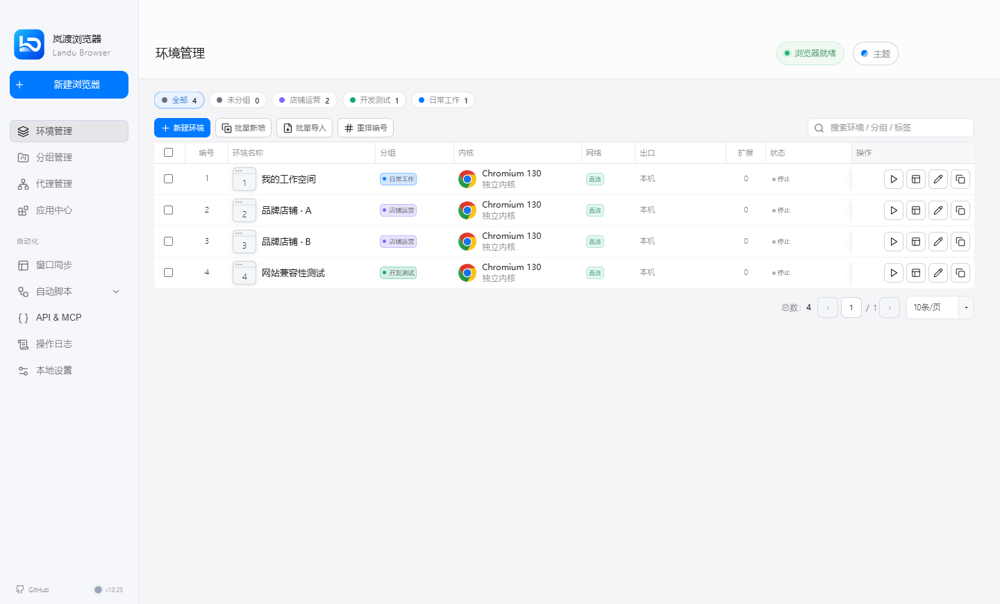
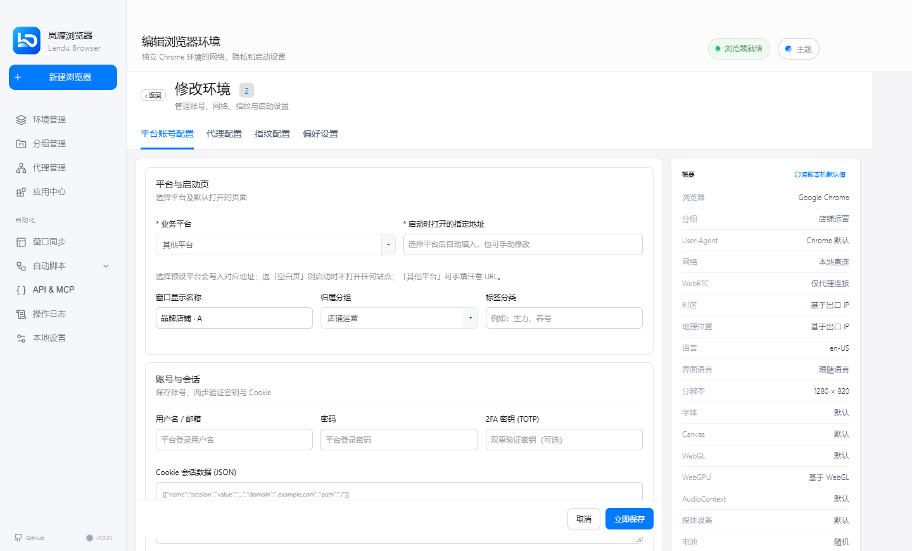

工作分开，
思路不被打断。
不同项目使用独立 Chromium Profile，分别管理 Cookie、缓存与本地存储。用分组和标签，找到你需要的那个环境。
把独立环境、代理、扩展与自动化，放进一个清爽的工作台。
岚渡浏览器，让多环境管理回归简单。


实际桌面界面 · 使用示例数据展示
LESS CLUTTER. MORE CONTROL.
从原项目的实用能力出发，
为每天的多环境工作整理好秩序。
不同项目使用独立 Chromium Profile，分别管理 Cookie、缓存与本地存储。用分组和标签，找到你需要的那个环境。
集中管理代理、语言、时区与 User-Agent 等参数，让配置清楚可见，而不是散落在各个窗口里。
沿用原项目的扩展管理、窗口同步、RPA 与本地 API / MCP，为日常操作和开发集成留好入口。
环境隔离不等于网络匿名；指纹设置不保证通过第三方检测或避免账号限制。代理资源需自行准备。
为不同业务创建独立环境，用分组、标签和启动页整理日常操作。
切换语言、区域与测试配置，在独立空间中验证页面和自动化流程。
把工作、学习与项目资料分开，不用反复清空当前浏览器的登录状态。
BUILT ON OPEN SOURCE
岚渡浏览器基于 OpenBrowser 二次开发，保留原有业务逻辑，改进主题、排版与使用体验。我们不把上游的成果说成从零原创。
感谢原作者 sheying2013 和所有贡献者。
了解项目来源与许可证岚渡浏览器软件
免费使用不设付费激活门槛
保留原作者署名与 MIT 许可证。
代理、VPN 等外部服务按需另行选择。
YOUR NEXT WORKSPACE
文档与官网已公开。
桌面客户端以仓库实际发布为准。
推荐 Windows 10/11 · 64 位。完整版内置独立内核与字体资源，下载后双击安装，无需配置开发环境。
下载 Windows 完整版尚未进行代码签名；请核对来源与 SHA-256。安装指南 ↗
macOS / Ubuntu：上游有支持与打包路径，岚渡版本尚未独立验证发布。当前没有 Android / iOS 客户端或手机管理端。
GOOD TO KNOW
把重要的事情，提前说清楚。
软件免费使用，不设置付费激活或订阅门槛。代理、VPN、服务器等第三方服务由你自行选择，可能另有费用，不是软件的必购项目。
岚渡基于 OpenBrowser 源码二次开发，保留核心业务逻辑，改进品牌、主题与界面体验。它不是原作者官方发行版，原作者及贡献者的署名与 MIT 许可证会保留。
在本页下载 Windows x64 完整版，或前往 Releases 选择轻量版、对应应用源码和 SHA-256 校验文件。普通用户选择 EXE；源码 ZIP 不是安装程序。完整版包含内核与字体，体积较大，当前暂不提供增量更新。
当前没有 Android / iOS 客户端，也没有手机远程管理端。官网适配手机浏览，不代表桌面环境可以在手机上运行。
没有附送代理线路或 VPN 套餐。你可以选择本地直连，也可以配置已有代理。不同环境需要不同出口时，要分别准备对应的代理资源。
环境配置与浏览器 Profile 主要保存在本机；若主动启用远程备份，则按你的配置传到相应服务。迁移和更新前请备份实际数据目录，不要只复制程序文件。
SIMPLE SPACE. FOCUSED WORK.